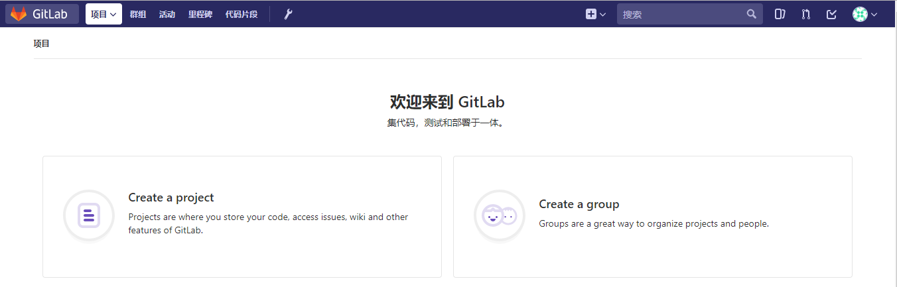
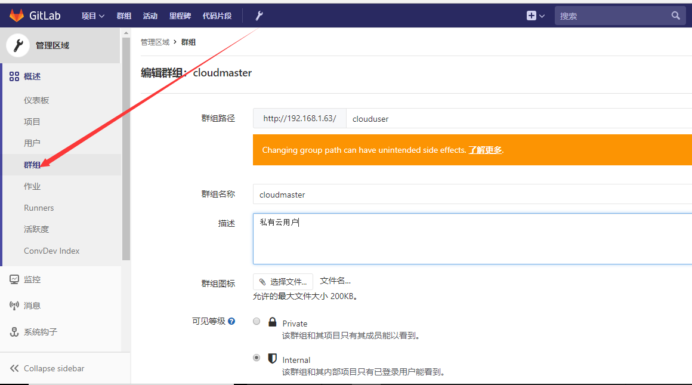

GitLab与Jenkins结合构建持续集成(CI)环境
一．持续集成概述及gitlab介绍
1.持续集成概述及运行流程：
持续集成概述：持续集成（Continuous integration）持续集成是指开发者在代码的开发过程中，可以频繁的将代码部署集成到主干，并进程自动化测试。
持续交付：持续交付指的是在持续集成的环境基础之上，将代码部署到预生产环境。
持续部署：在持续交付的基础上，把部署到生产环境的过程自动化。
2.GitHub和GitLab的区别：
相同点: 二者都是基于web的Git仓库，在很大程度上GitLab是仿照GitHub来做的，它们都提供了分享开源项目的平台，为开发团队提供了存储、分享、发布和合作开发项目的中心化云存储的场所。
不同点：
1、GitHub如果要使用私有仓库，是需要付费的。GitLab可以在上面创建私人的免费仓库。
2、GitLab让开发团队对他们的代码仓库拥有更多的控制，相比于GitHub，它有不少的特色：允许免费设置仓库权限；允许用户选择分享一个project的部分代码；允许用户设置project的获取权限，进一步的提升安全性；可以设置获取到团队整体的改进进度；通过innersourcing让不在权限范围内的人访问不到该资源。
总结：从代码私有性方面来看，有时公司并不希望员工获取到全部的代码，这个时候GitLab无疑是更好的选择。但对于开源项目而言，GitHub依然是代码托管的首选。
github 是一个基于git实现的在线代码托管仓库，包含一个网站界面，向互联网开放
gitlab 是一个基于git实现的在线代码仓库托管软件，一般用于在企业内部网络搭建git私服
注： gitlab-ce 社区版 ； gitlab-ee是企业版，收费
3.持续集成系统的工作流程大概分为以下几步
1, 开发者将新版本push到Gitlab。
2, Gitlab随后触发jenkins master结点进行一次build。(通过web hook或者定时检测)
3, jenkins master结点将这个build任务分配给若干个注册的slave结点中的一个，这个slave结点根据一个事先设置好的脚本进行build。这个脚本可以做的事情很多，比如编译，测试，生成测试报告等等。这些原本需要手动完成的任务都可以交给jenkins来做。
4, 我们在build中要进行编译，这里使用了分布式编译器distcc来加快编译速度。
二．搭建GitLab平台
实验环境： centos7.4 虚拟机需要6G，不然后期运行时，内存不够用，直接报错。
安装Gitlab需要的组件
yum install curl policycoreutils openssh-server openssh-clients postfix -y
默认，使用 Postfix 发送邮件
systemctl start postfix;systemctl enable postfix
iptables –F
systemctl stop firewalld;systemctl disable firewalld
安装GitLab
方法一：使用清华源yum安装
[root\@lewis63 yum.repos.d]# cat gitlab_gitlab-ce.repo
[gitlab-ce]
name=gitlab-ce
baseurl=http://mirrors.tuna.tsinghua.edu.cn/gitlab-ce/yum/el7
repo_gpgcheck=0
gpgcheck=0
enabled=1
gpgkey=https://packages.gitlab.com/gpg.key
[root\@lewis63 ~]# yum install gitlab-ce –y
方法二：本地上rpm包安装
[root\@lewis63 ~]# rpm -ivh gitlab-ce-10.2.3-ce.0.el7.x86_64.rpm
安装完成有提示让配置gitlab访问地址：
[root\@lewis63 ~]# vim /etc/gitlab/gitlab.rb
external_url 'http://192.168.1.63' #修改成自己IP地址
重新配置应用程序
gitlab-ctl reconfigure #重新配置应用程序。修改了gitlab服务配置文件后，都需要执行一下这个命令。让各个服务的配置文件，重新加载一下配置文件。
[root\@lewis63 ~]# gitlab-ctl status #可以使用gitlab-ctl管理gitlab，例如查看gitlab状态：
run: gitaly: (pid 3404) 79s; run: log: (pid 3106) 126s
run: gitlab-monitor: (pid 3420) 78s; run: log: (pid 3169) 114s
run: gitlab-workhorse: (pid 3392) 80s; run: log: (pid 3062) 139s
run: logrotate: (pid 3090) 132s; run: log: (pid 3089) 132s
run: nginx: (pid 3069) 138s; run: log: (pid 3068) 138s
run: node-exporter: (pid 3154) 120s; run: log: (pid 3153) 120s
run: postgres-exporter: (pid 3446) 77s; run: log: (pid 3317) 96s
run: postgresql: (pid 2841) 198s; run: log: (pid 2840) 198s
run: prometheus: (pid 3436) 78s; run: log: (pid 3249) 102s
run: redis: (pid 2781) 209s; run: log: (pid 2780) 209s
run: redis-exporter: (pid 3222) 108s; run: log: (pid 3221) 108s
run: sidekiq: (pid 3045) 146s; run: log: (pid 3044) 146s
run: unicorn: (pid 3007) 152s; run: log: (pid 3006) 152s
[root\@lewis63 ~]# netstat -anput | grep 80
tcp 0 0 127.0.0.1:8080 0.0.0.0:* LISTEN 3040/unicorn master
tcp 0 0 0.0.0.0:80 0.0.0.0:* LISTEN 3069/nginx: master
tcp 0 0 0.0.0.0:8060 0.0.0.0:* LISTEN 3069/nginx: master
默认使用nginx做为web界面
注：如果后期web界面访问时，总报502，要把防火墙清空规则，另外内存要大于4G，不然后内存不足，也报502
登录GitLab
第一次登录gitlab，需要为root用户修改密码，root用户也是gitlab的超级管理员

关闭GitLab注册功能：
默认情况下可以直接注册账号，不需要注册功能，可以关闭。
点Admin area -》 setting -》 取消sign-up enabled标签前对勾
管理GitLab
关闭gitlab： # gitlab-ctl stop
启动gitlab： # gitlab-ctl start
重启gitlab： # gitlab-ctl restart
gitlab主配置文件：/etc/gitlab/gitlab.rb //可以自定义一些邮件服务等
日志地址：/var/log/gitlab/ // 对应各服务
服务地址：/var/opt/gitlab/ // 对应各服务的主目录
仓库地址：/var/opt/gitlab/git-data //记录项目仓库等提交信息
重置配置：gitlab-ctl reconfigure //不要乱用，会重置为最原始的配置
重启服务：gitlab-ctl stop/start/restart //启动命令
centos7部署汉化版GitLab
获取gitlab汉化包
下载git：yum install -y git
克隆获取汉化版本库
下载最新的汉化包：
git clone https://gitlab.com/xhang/gitlab.git
如果下载老版本的汉化包，需要加上老版本的分支：
[root\@lewis63 ~]# git clone https://gitlab.com/xhang/gitlab.git -b v10.2.3-zh
查看该汉化补丁的版本
cat gitlab/VERSION
gitlab-ctl stop #停止gitlab服务
cd /root/gitlab #切换到gitlab汉化包所在的目录
比较汉化标签和原标签，导出 patch 用的 diff 文件到/root下
git diff v10.2.3 v10.2.3-zh > ../10.2.3-zh.diff
yum install patch -y
cd #回到root
将10.2.3-zh.diff作为补丁更新到gitlab中
patch -d /opt/gitlab/embedded/service/gitlab-rails -p1 \< 10.2.3-zh.diff
启动服务，等1分钟，再去访问web页面。访问太快会显示502错误。
gitlab-ctl start

三．GitLab日常使用
1.新建项目
先创建群组

创建项目
可见等级：
Private：私有的，只有自己或者组内成员可以访问
Internet：所有登录gitlab平台的用户都可以访问
Public：公开的，所有人都可以访问，即不登录gitlab也可以访问
2.创建用户
3.重置用户密码
方法1.登录邮箱
方法2.修改密码
选择Admin area -》用户-》选中用户-》编辑
4.删除用户
当对方离职时候，为了安全起见，需要删除对方的gitlab权限，避免机密信息丢失，操作方法如下：
5.添加用户到群组
6.添加代码
导出克隆项目
安装git
yum install git -y
下载项目
[root\@lewis63 ~]# git clone git\@192.168.1.63:root/cloudmaster.git
也可以使用http协议下载
[root\@lewis63 ~]# git clone http://192.168.1.63/root/cloudmaster.git
Cloning into 'cloudmaster'...
Username for 'http://192.168.1.63': liukai
Password for 'http://liukai\@192.168.1.63':密码
查看克隆下来的代码
[root\@lewis63 ~]# ls cloudmaster/ -a
. .. .git index.html
8.初次运行Git前配置
一般在新的系统上，我们都需要先配置下自己的 Git 工作环境。配置工作只需一次，以后升级时还会沿用现在的配置。
第一个要配置的是你个人的用户名称和电子邮件地址。这两条配置很重要，每次 Git 提交时都会引用这两条信息，说明是谁提交了更新，所以会随更新内容一起被永久纳入历史记录。
git运行的环境变量有点像.bashrc，决定了 Git 在各个环节的具体工作方式和行为。这些变量可以存放在以下两个的地方：
1、~/.gitconfig 文件：用户目录下的配置文件只适用于该用户。若使用 git config 时用 --global 选项，读写的就是这个文件。
例子：修改用户信息
[root\@lewis63 ~]# git config --global user.name "liukai"
[root\@lewis63 ~]# git config --global user.email "xiaokai0312\@163.com"
[root\@lewis63 ~]# cat ~/.gitconfig
[user]
name = liukai
email = xiaokai0312@163.com
2、当前项目的 Git 目录中的配置文件（也就是工作目录中的 .git/config 文件）：这里的配置仅仅针对当前项目有效。每一个级别的配置都会覆盖上层的相同配置，所以 .git/config 里的配置会覆盖 ~/.gitconfig中的同名变量。
如果要在某个特定的项目中使用其他名字或者邮件地址，先进到项目上下，然后只要去掉 --global 选项重新配置即可。 最后配置的用户和邮件地址会保存在当前项目的 .git/config 文件里。
例：修改某个git项目下的环境变量
[root\@lewis63 ~]# cd cloudmaster/
[root\@lewis63 cloudmaster]# git config user.name "liukai"
[root\@lewis63 cloudmaster]# git config user.email "xiaokai0312\@163.com"
[root\@lewis63 cloudmaster]# cat ./.git/config
[core]
repositoryformatversion = 0
filemode = true
bare = false
logallrefupdates = true
[remote "origin"]
url = http://192.168.1.63/root/cloudmaster.git
fetch = +refs/heads/*:refs/remotes/origin/*
[branch "master"]
remote = origin
merge = refs/heads/master
[user]
name = liukai
email = xiaokai0312@163.com
9.Git常用命令
git config --global user.name “name“ #设置全局用户名
git config --global user.email mail #设置全局邮箱
git config --global --list #列出用户全局设置
git add index.html #添加文件到暂存区
git commit -m “描述内容“ #提交文件到工作区
git status #查看工作区的状态
git push #提交代码到git服务器上
git pull #获取代码到本地
git log #查看操作日志
vim .gitignore #定义忽略文件
git reset --hard HEAD\^ #git版本回滚， HEAD为当前版本，加一个\^为上一个，\^\^为上上一个版本
git reflog # #获取每次提交的ID，可以使用--hard根据提交的ID进行版本回退
git reset --hard 5ae4b06 #回退到指定id的版本
# git branch #查看当前所处的分支
git checkout -- file #从服务器更新某个那文件覆盖本地的文件
例：把修改过的index.html文件更新主版本中
[root\@lewis63 cloudmaster]# echo "hello,world" > index.html
[root\@lewis63 cloudmaster]# git add index.html
[root\@lewis63 cloudmaster]# git commit -m "edit index" #提交到暂存区中
[master de8e096] edit index
1 file changed, 1 insertion(+), 1 deletion(-)
[root\@lewis63 cloudmaster]# git push -u origin master #上传到主干master上
Username for 'http://192.168.1.63': liukai
Password for 'http://liukai\@192.168.1.63':
remote: GitLab: You are not allowed to push code to protected branches on this project.
提示没有权限提交代码到master
解决：
版本库-》保护分支-》允许push选择开发
10.工作区和暂存区及分支
1、工作区就是编辑文件的目录区域，需要将工作区的修改好的文件add到暂存区才能提交到git服务器，在工作区有多个文件的时候可以将一个或多个文件添加至暂存区，再提交到git服务器即可。
2、在服务器创建分支
[root\@lewis63 cloudmaster]# git branch bbs #创建一个分支
[root\@lewis63 cloudmaster]# git checkout bbs #切换到分支bbs
Switched to branch 'bbs'
[root\@lewis63 cloudmaster]# git branch #查看当前所处的分支
* bbs
master
[root\@lewis63 cloudmaster]# echo "bbs branch" > a.txt #随意在里面写一些内容
[root\@lewis63 cloudmaster]# git add a.txt
[root\@lewis63 cloudmaster]# git commit -m "提交到bbs分支" #提交到暂存区中
[bbs 0ee53ea] 提交到bbs分支
1 file changed, 1 insertion(+)
create mode 100644 a.txt
[root\@lewis63 cloudmaster]# git push -u origin bbs #上传到分支bbs分支上
11.部署密钥
项目-》设置-》版本库
[root\@lewis63 ~]# ssh-keygen #生成公钥
[root\@lewis63 ~]# cat .ssh/id_rsa.pub
ssh-rsa AAAAB3NzaC1yc2EAAAADAQABAAABAQDjpJQYgBrwR2WpaR4sr9ENrmrTrSurVcgA0NVuqLHm4HOLrRX9yp+YZGz/65E8vGDRnlgSmUq9CzioCS/dmAHLy7vEZGDh4kz2EbR22p2VfsPJ08bBTdW3ZZ43flqFj/MN3+mnzUWt1PL2CG/VU+eukr5zAjKfXlI3ZQnfG8sp8VxK57+IjEVg4mEOGEbrZrvQjGxuUvf2m8ffgGyWGvzPlc/w5yMG2LtOYXoqPfZ2hWBq8c2ISEhLmDRGUA3fxMUKR62MeYAMa4eVwxeK5dYLVcZBQqLwzLmCD3l/33GNfyPZKvtocor66ma1Qg/KkUbz2CRtMJgrO0l5e2ZnqUT5 root\@lewis63
把密钥粘贴到gitlab密钥，允许推送，添加密钥
部署key后，可以不用用户密码直接获取代码
12.关于git push.default设置的知识。
默认配置下，当使用git push命令而没有明确的指名本地分支和远程参考分支的情况下，会有如上的提示。如果git push命令没有明确指定引用规格(refspec),也就是没有指定推送的源分支和目标分支，那么git会采用push.default定义的动作。不同的值适用于不同的工作流程模式。
显而易见，主要是因为之前没有进行设置引用规格才出现的这种问题，现在我把push.default的可用值与配置方法贴在下面。push.default可用的值如下：
1.nothing 不推送任何东西并有错误提示，除非明确指定分支引用规格。强制使用分支引用规格来避免可能潜在的错误。
2.current 推送当前分支到接收端名字相同的分支。
3.upstream 推送当前分支到上游\@{upstream}。这个模式只适用于推送到与拉取数据相同的仓库，比如中央工作仓库流程模式。
4.simple 在中央仓库工作流程模式下，拒绝推送到上游与本地分支名字不同的分支。也就是只有本地分支名和上游分支名字一致才可以推送， 就算是推送到不是拉取数据的远程仓库，只要名字相同也是可以的。在GIT 2.0中，simple将会是push.default的默认值。 simple只会推送本地当前分支。
5.matching 推送本地仓库和远程仓库所有名字相同的分支。这是git当前版本的缺省值。
配置push.default的命令如下： git config --global push.default simple
四．搭建Jenkins实现持续集成
1.源码安装JDK1.8
Jenkins是Java编写的，所以需要先安装JDK，这里采用yum安装，如果对版本有需求，可以直接在Oracle官网下载JDK。
[root\@lewis63 ~]# tar -zxf jdk-8u161-linux-x64.tar.gz -C /usr/local/
[root\@lewis63 ~]# cd /usr/local/
[root\@lewis63 local]# mv jdk1.8.0_161 jdk
配置环境变量
[root\@lewis63 local]# vim /etc/profile #在末尾加入
export JAVA_HOME=/usr/local/jdk
export JRE_HOME=/usr/local/jdk/jre
export CLASSPATH=.:$JAVA_HOME/lib/dt.jar:$JAVA_HOME/lib/tools.jar:$JRE_HOME/lib
export PATH=$JAVA_HOME/bin:$JRE_HOME/bin:$PATH
[root\@lewis63 local]# source /etc/profile #使立即生效
[root\@lewis63 local]# java -version
java version "1.8.0_161"
Java(TM) SE Runtime Environment (build 1.8.0_161-b12)
Java HotSpot(TM) 64-Bit Server VM (build 25.161-b12, mixed mode)
2.安装jenkins
[root\@lewis63 ~]# wget http://pkg.jenkins.io/redhat/jenkins.repo -O /etc/yum.repos.d/jenkins.repo
[root\@lewis63 yum.repos.d]# rpm --import http://pkg.jenkins.io/redhat/jenkins.io.key
[root\@lewis63 yum.repos.d]# yum install -y jenkins #默认安装最新版本。或者直接安装jenkins-2.93-1.1.noarch.rpm包
注：新版GitLab的服务端口为8080，为了不和GitLab的服务端口相冲突，修改Jenkins的默认端口8080为198
[root\@lewis63 ~]# vim /etc/sysconfig/jenkins
改：56 JENKINS_PORT="8080"
为：56 JENKINS_PORT="1198"
10 JENKINS_HOME="/var/lib/jenkins" #数据目录，建议用固态磁盘来存数据，可以自己定义
[root\@lewis63 ~]# /etc/init.d/jenkins start
报错1：
systemctl status jenkins.service
Starting Jenkins bash: /usr/bin/java: No such file or directory
发现是找不到jdk，修改文件
解决：
ln -s /usr/local/jdk/bin/java /usr/bin/java #做链接
报错2：
启动jenkins发现端口没有起来，查看jenkins日志
tail /var/log/jenkins/jenkins.log 权限不够
jenkins默认是以jenkins用户运行，修改jenkins用户为root
[root\@lewis63 ~]# vim /etc/sysconfig/jenkins
JENKINS_USER="root"
重新启动：
[root\@lewis63 ~]# /etc/init.d/jenkins start
[root\@lewis63 bin]# netstat -anput | grep 1198
tcp6 0 0 :::1198 :::* LISTEN 24112/java
[root\@lewis63 ~]# chkconfig jenkins on
安装推荐的插件
3.手动安装jenkins插件
如果在下线安装插件失败了，或是无网环境下想安装插件，可以选择手动安装
安装成功后，登录系统，选择：
系统管理->插件管理->高级
插件下载地址：
http://updates.jenkins-ci.org/download/plugins/ #在有网的环境下，把自己需要的插件下载好，然后再从本地上传。
方法2： 也可以直接把一台安装好jenkins插件服务器的/var/lib/jenkins/plugins目录下的文件复制到新的jenkins中。
把准备好的插件解压一下：
[root\@lewis63 jenkins]# tar czvf plugins.tar.gz plugins/
#cd /var/lib/jenkins/
#rm -rf /var/lib/jenkins/plugins
#tar -zxvf plugins.tar.gz #上传plugins.tar.gz到linux系统上，解压缩
#chown jenkins.jenkins ./* -R
#/etc/init.d/jenkins start
注：记得重启jenkins，这个非常重要，因为不重启，插件不会生效
到此jenkins安装成功。
登录gitlab http://192.168.1.63/ 用户名： root
登录jenkins http://192.168.1.63:198/ 用户名： admin